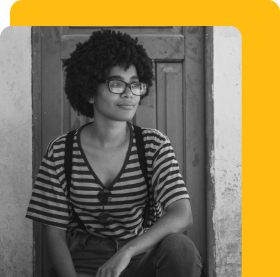

Olá! Sou Tainá Narcizo .
Bem vindo ao meu portfólio!

Sobre mim
Olá! Me chamo Tainá Narcizo, residente da cidade de Maricá no estado do Rio de Janeiro, Brasil. Tenho 27 anos e minha vida profissional começou cedo com trabalhos informais, aos 18 anos ingressei na faculdade de engenharia de produção e foi lá o meu primeiro contato com programação, não segui na faculdade, porém segui com a programação, participei de um bootcamp de aprendizagem fullstack para a web e ao termino do curso entrei na minha atual empresa onde atuo na área de desenvolvimento front-end voltado para a web. Atualmente curso Engenharia de Software.